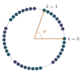

STEP III 2022、第8問
先に進む前に問題を読んでおこう。問題は、OCRが配布している2022年のSTEP問題一式（zipファイル）のSTEP IIIに収録されている： www.ocr.org.uk/Images/696587-2022-past-papers.zip
導入
学校の幾何で出会う角は、たいてい度数が整数である：\(30^\circ\), \(45^\circ\), \(60^\circ\)。その余弦は \(\frac{\sqrt3}{2}\) や \(\frac12\) のような数になる。では逆向きはどうだろうか。余弦が \(\frac13\) のような簡単な分数であるとき、その角はきれいな度数になるだろうか。
角 \(\cos^{-1}\frac13 \approx 70.528779\ldots^\circ\) は科学のいたるところに現れる。これは正四面体（regular tetrahedron）の隣り合う二つの面のなす角であり、その補角（supplement）\(109.47^\circ\) はメタン分子の結合どうしのなす角である。この問題は、この角の度数が有理数（rational number）でないことを証明する。\(70\frac12\) でもなく、\(\frac{1411}{20}\) でもなく、どんな分数でもない。その小数展開は決して循環しない。一見すると地味なこの事実が、1900年にダフィット・ヒルベルト（David Hilbert）が提出した有名な問題の一つを解決したのである。
取りかかる前に
\(\theta\) が有理数であり、たとえば \(\theta = \frac pq\) 度であったとする。\(\sin(k\theta) = 0\) となる正の整数 \(k\) を求めよ。
\(k = 180q\) とすれば \(k\theta = 180p\) 度となり、これは半回転の整数倍なので \(\sin(k\theta) = 0\) である。したがって有理数の角には、必ず \(180^\circ\) の倍数に一致する倍数が存在する。\(\theta\) が無理数（irrational）であることを証明するには、\(k\theta\) の正弦が \(0\) になるような倍数が一つもないことを示せば十分である。小問 (ii) では、そのような \(k\) が存在するならその最小のものをとり、矛盾（contradiction）を導くことでこれを示す。これは再び 第 1.3 節 の整列原理（well-ordering principle）である。
順を追って解く
段階 1 倍角の公式
\(\cos k\theta + \mathrm{i}\sin k\theta = (\cos\theta + \mathrm{i}\sin\theta)^k\) と書き、\(\cos^k\theta\) をくくり出せ。括弧の中には何が残るか。
\((\cos\theta + \mathrm{i}\sin\theta)^k = \cos^k\theta\,(1 + \mathrm{i}\tan\theta)^k = \cos^k\theta\sum_{j=0}^{k}\binom kj\mathrm{i}^j\tan^j\theta\) である。虚部は奇数 \(j = 2m + 1\) の項から生じ、そのとき \(\mathrm{i}^j = \mathrm{i}(-1)^m\) である： \[\begin{aligned} \sin k\theta &= \cos^k\theta\sum_{m}(-1)^m\binom{k}{2m+1}\tan^{2m+1}\theta \\ &= \sin\theta\cos^{k-1}\theta\sum_m(-1)^m\binom{k}{2m+1}\tan^{2m}\theta. \end{aligned}\] \(\tan^2\theta = \sec^2\theta - 1\) であるから、これが求める公式である。■ 偶数 \(j = 2m\) の項から生じる実部からは、次が得られる。 \[\cos k\theta = \cos^k\theta\left(1 - \binom k2(\sec^2\theta - 1) + \binom k4(\sec^2\theta - 1)^2 - \cdots\right).\]
段階 2 偶奇性
ここで \(\sec\theta = a\) は奇数の整数なので、\(\sec^2\theta - 1 = a^2 - 1\) は偶数の整数である。また \(\theta\) は \(0^\circ\) と \(90^\circ\) の間に（両端を含まずに）あるので、\(\sin\theta \neq 0\) かつ \(\cos\theta \neq 0\) である。
\(\sin(k\theta) = 0\) ならば、括弧 \(k - \binom k3(a^2 - 1) + \cdots\) は \(0\) でなければならない。最初の項以外はすべて \(a^2 - 1\) の倍数である。このことから \(k\) について何がわかるか。
括弧は、\(k\) に偶数 \(a^2 - 1\) の倍数の和を加えたものである。もし \(k\) が奇数なら括弧は奇数となるが、奇数の整数が \(0\) になることはない。よって \(k\) は偶数でなければならない。
すると \(\sin(k\theta) = 2\sin(\frac12k\theta)\cos(\frac12k\theta) = 0\) である。ところが \(\frac12k\) は \(k\) より小さい正の整数なので、\(k\) の最小性より \(\sin(\frac12k\theta) \neq 0\) である。ゆえに \(\cos(\frac12k\theta) = 0\) である。■
段階 3 矛盾
\(m = \frac12k\) として余弦の公式を適用せよ。なぜ \(\cos(m\theta)\) は決して \(0\) にならないのか。
段階 1より、\(\cos(m\theta) = a^{-m}\left(1 - \binom m2(a^2 - 1) + \binom m4(a^2 - 1)^2 - \cdots\right)\) である。括弧は \(1\) に偶数 \(a^2 - 1\) の倍数を加えたものなので奇数であり、特に \(0\) ではない。よって \(\cos(m\theta) \neq 0\) となり、段階 2に矛盾する。
したがって、\(\sin(k\theta) = 0\) となる正の整数 \(k\) は存在しない（もし一つでも存在すれば最小のものが存在するはずだが、その最小のものが存在しえないことをいま示した）。取りかかる前にで述べた観察により、\(\theta\) の度数は有理数ではありえない。■
段階 4 余接の場合
\(\cot\phi = \frac1b\) のとき、\(\sec^2\phi - 1\) はいくらか。それは偶数か。
\(\tan\phi = b\) なので \(\sec^2\phi - 1 = \tan^2\phi = b^2\) であり、\(b\) が偶数だからこれは偶数（実は \(4\) の倍数）である。また \(0^\circ < \phi < 90^\circ\) なので、\(\sin\phi\) と \(\cos\phi\) は \(0\) でない。あとはまったく同じ議論が成り立つ。\(k\) を \(\sin(k\phi) = 0\) となる最小の正の整数とすると、括弧 \(k - \binom k3b^2 + \cdots\) は \(0\) でなければならず、\(k\) は偶数となる。すると \(\cos(\frac12k\phi) = 0\) となるが、余弦の括弧 \(1 - \binom m2b^2 + \cdots\) は奇数である。これは矛盾なので、\(\phi\) は無理数である。■
たとえば、\(\cot^{-1}\frac12 = \tan^{-1}2 \approx 63.43^\circ\) は無理数である。
振り返り
有理数の角には周期的な倍数がある。この言い換えによって、無理数性がすべての \(k\) に対する \(\sin(k\theta)\) についての主張に変わった。
偶奇性の議論。\(2\) を法として考えることで、ある整数が奇数であり、したがって \(0\) でないことが示された。単純だが決定的である。
最小の反例。最小の \(k\) を仮定し、それより小さいもの（ここでは \(\frac12k\)）が存在しなければならないことを示すのは、第1章の整列原理による議論である。
背後にある数学
\(\theta\) の度数が有理数なら、\(\theta\) ずつ回転を繰り返すと、いずれ出発点に戻ってくる。\(\theta\) が無理数なら決して戻らず、しかも驚くべきことが起こる。点 \(k\theta\)（\(360^\circ\) を法として考える）は円周上に一様に広がり、どんな角にもいくらでも近づくのである。これは一様分布定理（equidistribution theorem）であり、1910年ごろにワイル（Hermann Weyl）、シェルピンスキ（Wacław Sierpiński）、Piers Bohl によってそれぞれ独立に証明された。図 5.5.1 は \(\cos^{-1}\frac13\) の最初の \(40\) 個の倍数を示している。すでに円周を埋めつつあり、どれ一つとして重ならない。

ヒルベルトの第3問題
1900年、ヒルベルトは新しい世紀に向けて23の問題を挙げた。その第3問題は次のようなものである：体積の等しい二つの多面体があるとき、一方をつねに有限個の多面体の断片に切り分けて、もう一方に組み立て直すことができるか。（平面上の多角形については答えは「できる」であり、これはウォレス–ボヤイ–ゲルヴィンの定理（Wallace–Bolyai–Gerwien theorem）である。）1年もたたないうちに、ヒルベルトの学生であったデーン（Max Dehn）は答えが否であることを示した。正四面体を切り分けて、同じ体積の立方体に組み立て直すことはできないのである。デーンの証明では、各多面体にその辺の長さと二面角（dihedral angle）から作られる量を対応させる。この量は現在デーン不変量（Dehn invariant）と呼ばれ、切り分けて組み立て直しても変わらない。立方体ではこれは \(0\) であり、正四面体では \(0\) でない。それはまさに、二面角 \(\cos^{-1}\frac13\) が \(180^\circ\) の有理数倍でないからである。そしてそれこそが、この問題で証明したことなのである。
ニーヴンの定理
この話はどこまで広がるのだろうか。1956年、ニーヴン（Ivan Niven）は、\(\theta\) の度数が有理数で \(\cos\theta\) も有理数ならば、\(\cos\theta\) は \(0\), \(\pm\frac12\), \(\pm1\) のいずれかであることを証明した。したがって、余弦が有理数となる「きれいな」角は \(0^\circ\), \(60^\circ\), \(90^\circ\), \(120^\circ\), \(180^\circ\) とその仲間だけである。証明では、\(2\cos\theta\) が整数係数のモニック多項式（monic polynomial）の根、すなわち代数的整数（algebraic integer）であるという事実を用いる。これは 第 1.3 節 の終わりで触れた考え方である。
思考のスキル
整数の式が決して \(0\) にならないことを示すには、それがつねに奇数であることを示せばよい：\(2\) を法として還元するのである。
最小反例（minimal counterexample）と組み合わせることで、この単純な考え方が深い事実を証明した。小さな数を法として還元し、方程式の成立を否定するのは、第 1.5 節 にもあるように、整数論で最もよく使われる手法の一つである。
次の一歩
正四面体。正四面体の二つの面のなす角が \(\cos^{-1}\frac13\) であること、およびメタン分子の二つの結合のなす角（正四面体の中心から二つの頂点へ向かう線分のなす角）が \(\cos^{-1}\left(-\frac13\right)\) であることを示せ。
\(3\)–\(4\)–\(5\) の三角形。\(3\)–\(4\)–\(5\) の三角形の最小の角の度数が無理数であることを示せ。（ヒント：その角は \(\cot^{-1}\frac43\) である。上の議論を修正するか、ガウス整数（Gaussian integer）\(4 + 3\mathrm{i}\) の累乗を考え、どれも実数にならないことを示せ。）
なぜ \(a\) は奇数なのか。\(a = 2\) のとき、議論のどこが破綻するか。\(\cos^{-1}\frac12\) は有理数か。
小さな場合のニーヴンの定理。\(0^\circ\) から \(90^\circ\) までの整数の度数 \(\theta\) で、\(\cos\theta\) が有理数となるものをすべて求め、その一覧がニーヴンの定理と一致することを確かめよ。
さらに学ぶために
Ivan Niven, Irrational Numbers（Mathematical Association of America）。『無理数』。三角関数の有理数値に関するニーヴンの定理を収録している。
Martin Aigner & Günter Ziegler, Proofs from THE BOOK、ヒルベルトの第3問題の章。『天書の証明』。デーンによる解決の美しい解説である。
Benjamin Yandell, The Honors Class: Hilbert’s Problems and Their Solvers（A. K. Peters）。ヒルベルトの問題とそれを解いた人々。23の問題すべての背後にある物語を描いている。